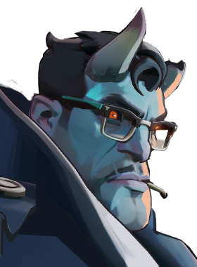

Siphon Life
Drain health from nearby enemies in front of you, dealing spirit damage over time and healing for a portion of the damage dealt. Abrams retains full control while active—he can move, dash, jump, shoot, and use other abilities.

A strategic chessmaster who navigates his bishops, knights, and rooks around a fight before dropping the Queen in an ultimate checkmate.
Case Closed reloads one shell at a time and can be interrupted. It has a 0.7s delay before reloading begins after firing. The spread pattern fires 9 pellets in a square formation with one pellet at the center. Falloff range is 17m → 40m [citation:5][citation:13].
Drain health from nearby enemies in front of you, dealing spirit damage over time and healing for a portion of the damage dealt. Abrams retains full control while active—he can move, dash, jump, shoot, and use other abilities.
Charge forward, pulling enemies you hit along with you. Pushing a hero into a wall applies a stun. Colliding with an enemy hero increases your movement speed during the charge.
Gain bonus defensive attributes. Taking damage grants temporary regeneration for a portion of the damage taken. The healing is based on actual health lost.
Leap high into the air before crashing into the ground, dealing spirit damage and applying stun to all enemies in the radius. If Abrams collides with a flying enemy while crashing, he drags them down with him.
Hard hitting, hard headed, and hard drinking; Detective Abrams has been a fixture on the New York investigating scene for years. From stolen art, to missing persons, to ritual murders; Abrams didn't just take any case that came across his desk… he solved them.
But his days of following cheating spouses came to an end the day he opened his office door and found The Tome sitting on his desk. No instruction was left for him save for a brief note scrawled in onyx blood that read "Don't let them have it". Abrams hasn't figured where the thing came from; but seeing as his home has been broken into, his office tossed on 3 different occasions, and his car firebombed, he has a vested interest in figuring out what the hell is going on.